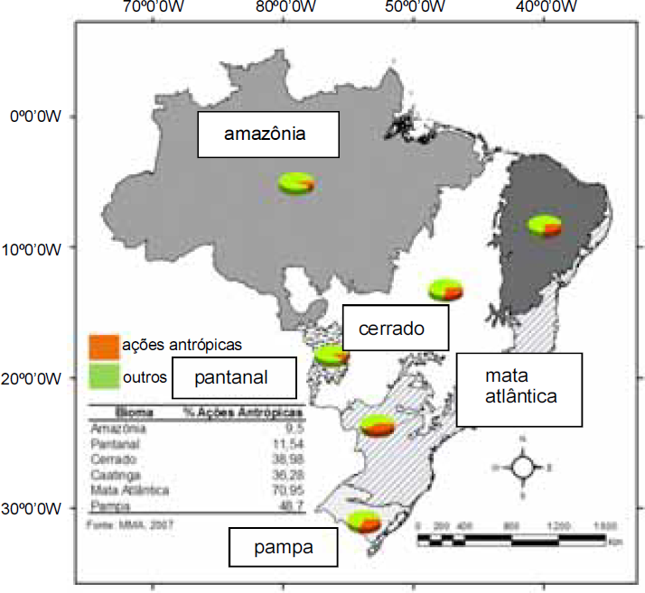

Na obra Domínios da Natureza no Brasil: Potencialidades Paisagísticas, Aziz Ab’Sáber discute as paisagens como heranças de processos fisiográficos e biológicos e como patrimônio coletivo dos povos que, historicamente, as herdaram como território de suas comunidades. A partir desse entendimento, pode-se refletir sobre a herança que a sociedade atual irá deixar para as gerações futuras. O mapa abaixo apresenta a situação atual das ações antrópicas nos biomas do Brasil, cujos percentuais são listados na tabela.
Com base nas informações apresentadas no texto, no mapa e na tabela ao lado deste, julgue os itens a seguir.
Assinale a opção correta.